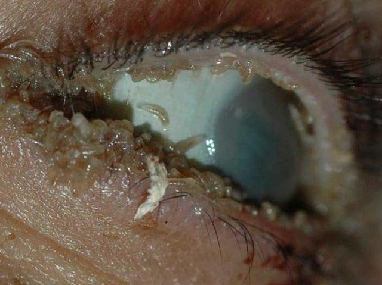
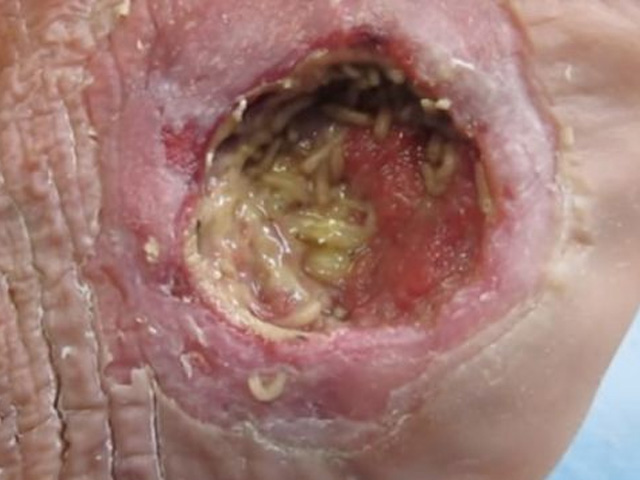
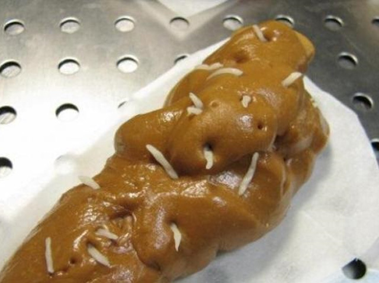

Hogyan mentettem meg egy ököl méretű féreg csomótól a beteget
El sem tudják képzelni, hogy mennyire elhanyagolt állapotban fordulnak hozzám a betegek...A paraziták és a fertőzések specializációja nem hagy unatkozni.De mostanában komolyan kezdtem aggódni az egyik betegem miatt.A kezelése 3,5 hónapig tartott, és bevallom, hogy a kapszula nélkül rosszabb vége lett volna.Még a tapasztalataimmal is egy kicsit megdöbbentő, és szinte tehetetlennek érzem magam, amikor a bél röntgenfelvétele a férgek egy ökölméretű összefonódást mutat, ráadásul az epehólyag és a hasnyálmirigy mellett.

Segítség! Paraziták meleg ágyának érzem magam.
Ezekkel a szavakkal lépte át a rendelőm küszöbét egy kedves ember. Etikai okokból megváltoztatom a nevét.Viktor fájdalomra panaszkodott a bordák alatt balról , gyakori székrekedésre, ésszerűtlen fogyásra, rossz leheletre és állandó gyengeségre.A tünetek kombinációja nem engedte, hogy egyértelműen a helminthosis-ra gondoljak, de Viktor már kivizsgáltatta az epehólyagát és a hasnyálmirigyét, túl volt a gyomortükrőzésen is. Egészséges! Azonban a röntgen jól látható, sötétebb foltot mutatott a fájdalom terjedésének területén.
A további diagnosztika azt mutatta, hogy férgek vannak a belekben.De a nehézség az volt, hogy Viktor belsejében ezek túl nagyok voltak, összefonódtak és begyürösödtek. Míg egyes példányok szaporodtak, mások elpusztultak, de sem az ők, sem az anyagcsere termékeik nem kerültek ürítésre a beteg testéből, ami azt jelenti, hogy gennyesedést és mérgezést okoztak a szervezetben. Ha időben semmilyen intézkedés nem történik, a jövőben a boncolás körülbelül a következő képet mutatja.
Hogy lehetséges ez, kérdezheti Ön? Az eset ritka, de megmagyarázható.Ha a helminthosis előtt Önnek már székrekedés hajlamai voltak, akkor miután ezek a férgek megnőnek, tojást raknak le a belek bármelyik zugában.A gömb megakadályozza az élelmiszer áthaladását a belekben. A férgek egymás között összegabalyodnak, így elvesztik a mozgás képességüket. Innen ered a rothadás és a bomlás, a szervezet mérgezése és akár szepszis is!
Viktor általános, normális életet élt, mint mindenki.
Mind ezt elmagyaráztam a páciensemnek. Szeme tele volt kimondhatatlan szomorúsággal és bosszúsággal. Megkérdezte, hol hibázott, miért pont vele történt ez a kellemetlen és életveszélyes helyzet. A válasz nagyon egyszerű: mindannyian rizikó csoportba tartozunk és veszélyben élünk.
Nézzenek csak körül - rovarok a bacilusok hordozói , a homokkal és a talajjal való érintkezés , ahol élősködők élnek, koszos felületek a tömegközlekedésen , a munkahelyen és néha otthon is! Plusz háziállatok, gyümölcsök közvetlenül a fáról, az alapvető higiéniai szabályok betartásának elmulasztása.Szóval vagy paranoiás tisztaságmániás lesz vagy ki van téve a parazitákkal való fertőzés veszélyének. Meddig lesz a hordozója, az nyitott kérdés.Talán évről évre nem is okoznak kellemetlenséget. Talán az immunitás legyőzi és elpusztítja őket.Vagy talán úgy fog történni, mint a Viktornál, és egy lépésre lesz a műtőasztaltól.
Itt vannak a helminthosis tünetei, amelyek alapján nem is gondolná, hogy gilisztás , de leggyakrabban ez így van:
- allergia /kiütések, könnyezés vagy orrfolyás
- gyakori megfázás, mandulagyulladás, orrdugulás
- krónikus fáradtság (a vitalitás és az energia gyors elvesztése a terheléstől függetlenül)
- gyakori fejfájás, szédülés, általános gyengeség;
- emésztési zavar, székrekedés vagy hasmenés;
- izom- és ízületi fájdalom;
- idegesség, álmatlanság és étvágytalanság;
- szem alatti duzzanat és sötét karikák
- egészségtelen bőrszín (sárgás vagy földes), pattanások és akne.
Úgy tűnik, hogy mi közös lehetne egy fejfájás és egy féreg között a bélben? De gondolj csak bele, és ha már nem is a belekben van. Végtére is, hajlamosak a szabad "migrációra" a "tulajdonos" szervezetében. Ha legalább néhány tünet egyezik, csináljon egy széklet labort. Ne hagyja, hogy a helyzet rosszabbodjon, ne várja meg, amíg a féregfertőzés eléri a veszélyes méretet.
Mi lett a vége a Viktor történetének?
Az végeredmény kedvező lett, leszögezem azonnal. Általában az ilyen esetek műtéti beavatkozással végződnek. Azonban, mivel a gömb elhelyezkedése elérhetetlen helyen volt, ahol a hasnyálmirigy vagy az epehólyag károsodásának veszélye állt fenn, késleltetni kellett a műtétet.
Először is el kellett mozdítani a férgeket az elfoglalt helyekről és ebben a kapszulák segítettek féreghajtó és méregtelenítő hatásukkal.Először egy Hong Kong-i konferencián hallottam a kapszulákról, ami valódi kuriózum volt! Egy teljesen naturális termék, amely javítja a bélfunkciót, teljesen elpusztítja az összes típusú parazitát és eltávolítja az anyagcsere termékeiket a testből.Pont az, amire Viktornak és a többi betegemnek szüksége van mind a kezelésére, mind a helminthosis megelőzésére.
A termék használatának gyakoriságát és azt a weboldalt, ahol meg lehet vásárolni, Viktor nem nagy lelkesedéssel fogadta, mert műtétre hangolódott rá. Azonban 1,5 hónap elteltével egy teljesen más személy érkezett vissza hozzám. Azt mondja, hogy a fájdalom eltűnt, a székrekedés ritkábban fordul elő, és egy héten át tisztult a szervezete olyan salakanyagoktól, hogy szörnyű lenne szavakkal kifejezni. De készített fotót.
Megmutatta és megkérdezte, hogy ez a teremtés lehet-e a betegségei és a szepszis okozója. " Természetesen - válaszoltam neki -, és ezekből nagyon sok volt a szervezetében, higgye el nekem!"
A férgek új helyének azonosításához és a fennmaradó kolónia méretének meghatározásához megismételtük a röntgent.És mit láttunk?Viktor hihetetlenül elégedett volt, viszont én egy kicsit meglepődtem.
Természetesen mindketten számítottunk a pozitív hatására, de hogy a gömbnek, az összekuszólódásnak nyoma sem marad , ez kellemes meglepetés volt! Annak érdekében, hogy végül meg lehessen állapítani a terápia hatékonyságát, a páciensnek székletvizsgálatot és vérvizsgálatot is elrendeltem. A mutatók a paraziták nyomaira utaltak, de egyáltalán nem tekinthetőek életveszélyesnek. „A műtét már nem aktuális! Maximum még egy kiegészítő kúra, a hatás megerősítés érdekében" - mondtam Viktornak.
A termék ilyen pozitív hatása után, egy olyan elhanyagolt esetben, mint a Viktoré , nyilvánvaló számomra, hogy a természetes kapszulákat minden módon népszerűsíteni kell.Ellentétben a nagyon mérgező gyógyszerekkel vagy a haszontalan népi gyógymódokkal, ezek a kapszulák kiváló eredményhez vezetnek a legkisebb károsodás nélkül. Ezért egyeztettem a gyártóval a kapszulák egy nagyobb tételéről különleges áron - ami a betegeim és a blog olvasói számára szól. Használják egészségükre, és ne hagyják, hogy a paraziták tönkretegyék az életüket!
144 Hozzászólás
Horváth Margaréta
Posted 9 days ago
Micsoda rémálom! Második nap a hatása alatt vagyok. Elgondolkodtam, hogy egy átfogó kivizsgáláson veszek részt. Ki tudja, hol található a féreg a szervezetemben?
Pap Lili
Posted 8 days ago
Ahelyett, hogy idegeskedjen és hatalmas mennyiségű pénzt költene megkérdőjelezhető felmérésekre, inkább a kapszulákból szedjen be egy kúrát és megnyugodhat. Mi családostól ezt tesszük - félévente egyszer.
Széles Szilvi
Posted Posted 8 days ago
Wow, milyen erős termék! Második éve nem tudok megszabadulni a hegyesfarku bélgilisztától, pedig már annyi mindent kipróbáltam! Több csomagot rendelek egyszerre, különösen ilyen vonzó áron. Köszönöm, doktor úr!
Száraz Dénes
Posted 6 days ago
Nekem már ki is szállították a -et , nagy reményeket fűzök hozzá.
Szekeres Pisti
Posted 6 days ago
A gyerkőcök is szedhetik a gyógyszert? Mivel a srácom állandóan a játszótéren homokot eszik a játékedényekből, ott biztosan sok parazita van.
Ferenc a blog szerzője
Posted 4 days ago
Igen, a gyermekek számára ezek a természetes és hipoallergén kapszulák igen alkalmasak. Ugyanakkor azt javaslom, hogy szoktassa le a fiát a homok evésről. Még akkor is, ha a férgektől megmenti, az ilyen étrend nem vezet semmi jóhoz.
Molnár Márta
Posted 3 days ago
Amíg el nem olvastam ezt a cikket, több mint két éve éltem allergia és állandó fejfájás állapotában. Gondolni sem mertem, hogy ez a férgek miatt van. Olyan sok pénzt költöttem különböző felmérésekre és haszontalan gyógyszerekre. Most harmadik nap iszom a -et, és olyan mocsok ürül ki belőlem.., látható, hogy a szervezet tisztul.
Ferenc a blog szerzője
Posted 3 days ago
Örülök a „tisztulásnak”, és annak a ténynek, hogy szükségesnek tartja, hogy ilyen őszinte fotókat tegyen ki ide.Küldjön még!
Péter Atya
Posted 2 days ago
Isten legyen veletek! Hogyan lehet hinni a férgek ilyen egyszerű megszabadulásában.
Tibi
Posted 2 days ago
Ön hisz Istenbe, de ami a kapszulákat illeti, a hatásukat a tudomány bizonyította és a gyakorlatban megerősítette.
Ilona
Posted 2 days ago
Csodálatos antihelminthosis kapszulák, csak nézzék meg, hogy milyen tiszta lett a bőröm három hét szedés után . Azt hittem, mindez a rossz táplálkozás és a gyenge máj miatt van, de nem! Kiderült hogy a giliszták az oka.